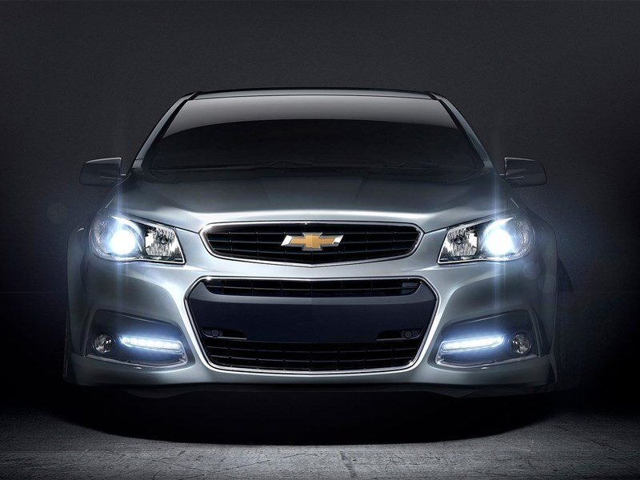
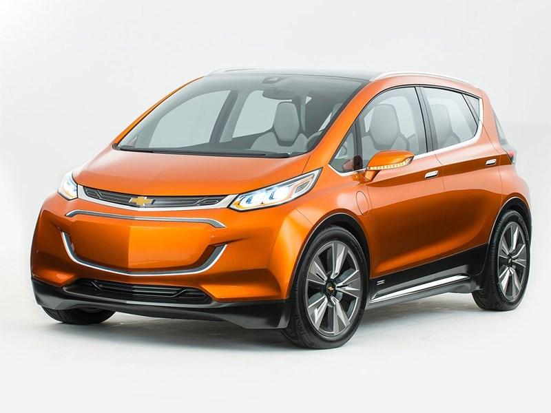
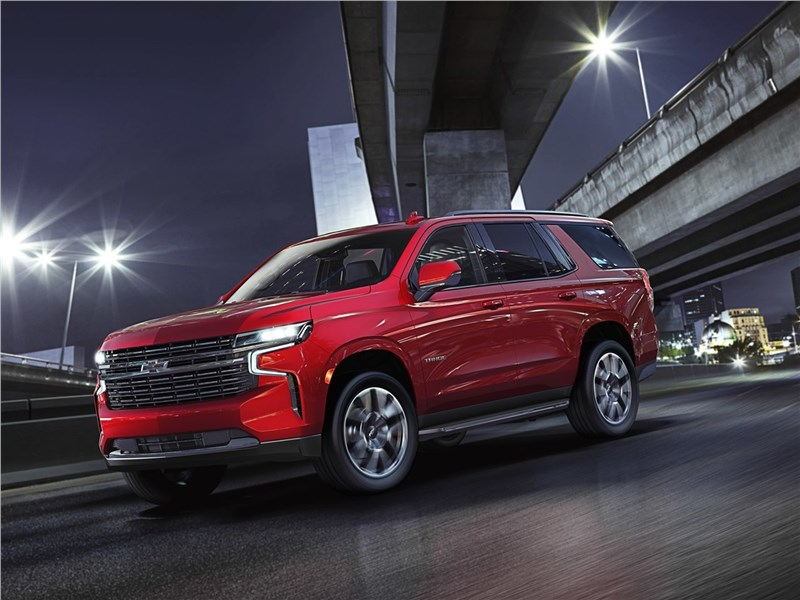
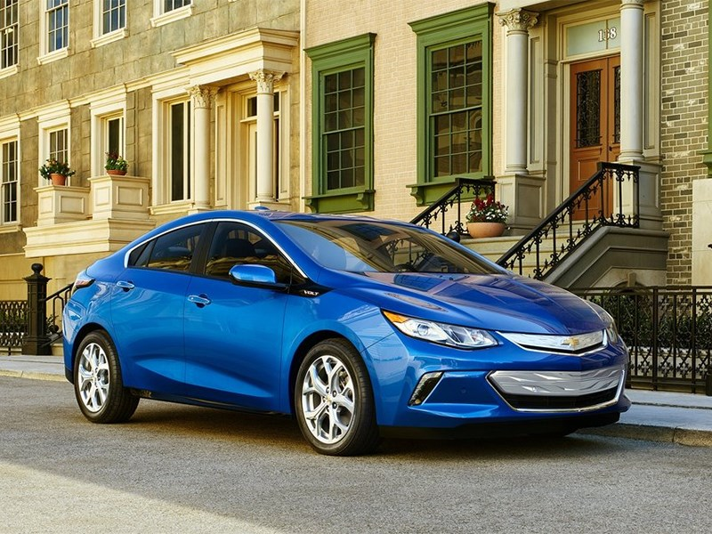

О Chevrolet
Chevrolet – одно из ведущих подразделений концерна General Motors. Штаб-квартира компании находится в северном пригороде Детройта, городе Уоррене. Chevrolet была создана в далеком 1911 году популярным гонщиком Луи Шевроле и Уильямом Дюрантом,
основателем GM. Спустя какое-то время Дюрант теряет контроль и над концерном, и над подразделением Шевроле. Однако несколько позже, в 1918 году, ценой недюжинных усилий, Дюрант возвращает себе GM и Chevrolet. Об успехе компании может сказать
статистика: каждый шестнадцатый автомобиль, разъезжающий в мире сегодня – это Chevrolet. Российскому автолюбителю компания предлагает как классических “американцев” (Tahoe, TrailBlazer), так и более дешевую линейку автомобилей корейской сборки.
Кроме того компания приложила руку и к созданию российского внедорожника, который носит имя Chevrolet Niva.

